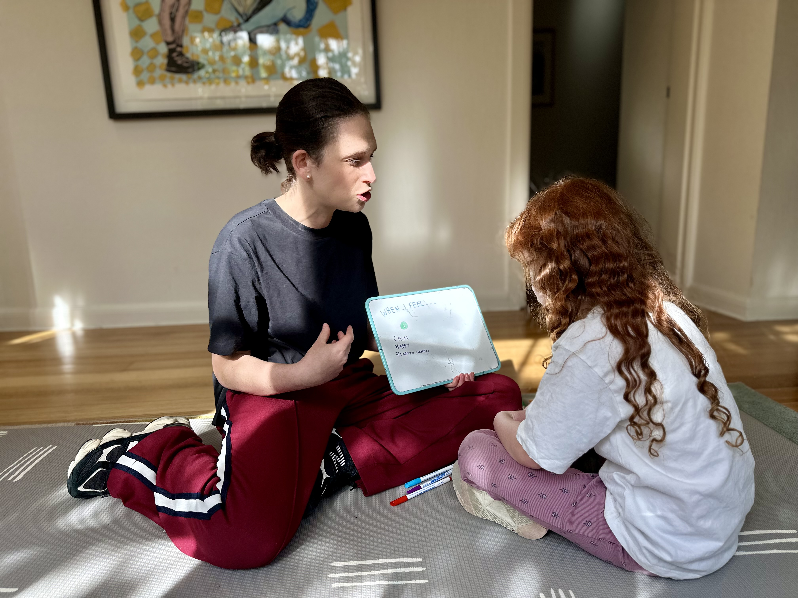
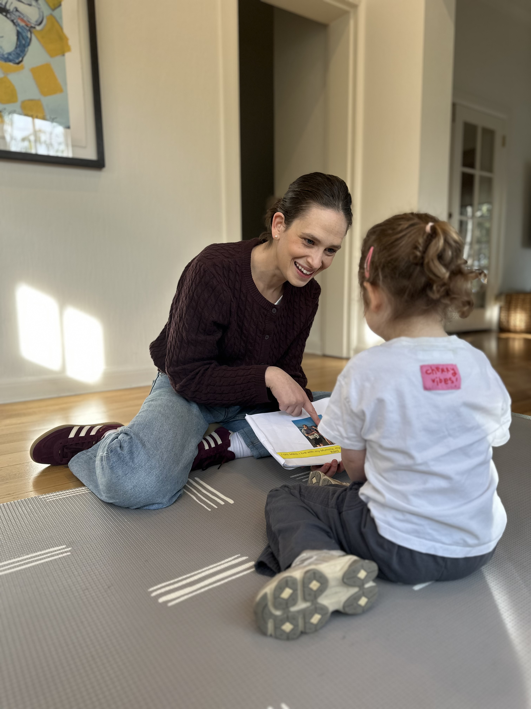

About Deli
I'm Deli, a paediatric OT and qualified behaviour support practitioner with 10 years of experience supporting Autistic young people and their families in a specialist school setting. I have recently moved into mobile occupational therapy and behaviour consulting.
My work is grounded in a simple belief: behind every behaviour is a feeling or need that deserves to be understood. I'm passionate about helping children access the things they want and need to do in their everyday lives, and I believe that with the right supports in place, they can.
I have a special interest in behaviour and emotional regulation, drawing on my experience as both an OT and a behaviour support practitioner. Having worked in a transdisciplinary model, I place a strong emphasis on collaboration, working closely with families, educators, and other professionals to ensure everyone is aligned and working towards shared goals, in a way that is child centred and evidence based.


My background in nursing further strengthens my ability to consider the medical and developmental factors that can influence a child's wellbeing and behaviour.
As a parent of two young children, I understand firsthand the challenges that may arise in daily routines, big emotions, and transitions. I pride myself on offering practical, realistic strategies that fit into real family life. These are approaches I use in my own home as well.
Whether you're navigating everyday challenges or more complex needs, I aim to support you with insight, clarity, and a collaborative approach that creates meaningful and lasting change.
Credentials and registration
Registration and membership
- AHPRA Registered Occupational Therapist
- Qualified Behaviour Support Practitioner
- Registered Nurse (Non-Practising)
- Working with Children Check
- First Aid Certification
Qualifications and training
- Masters of Occupational Therapy Practice, Monash University
- Bachelor of Nursing, Deakin University
- Micro-Certificate in Neurodivergent Affirming Positive Behaviour Support, University of Melbourne
- Certificate in Engaging in Positive Behaviour Support Practices, Monash University
- Certificate in Assessment and Analysis of Severe and Challenging Behaviours, Institute for Applied Behaviour Analysis